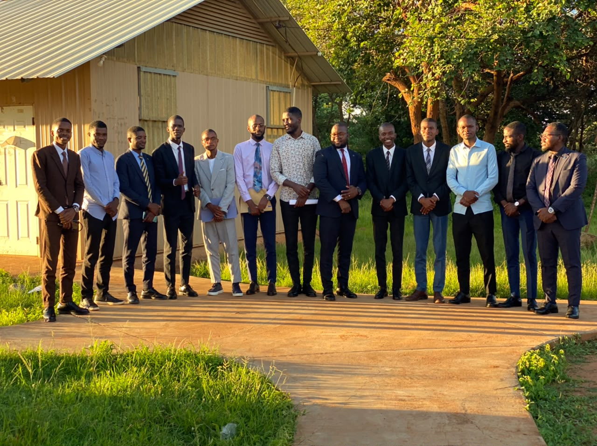

Graduados de 2026
Em 2026, tivemos a honra de formar uma nova turma de graduados da RUPSSA. Estes estudantes dedicados representam o futuro da nossa associação, trazendo consigo esperança, paixão e compromisso com a missão que nos une.
Unindo teologados e jovens em busca de formação espiritual, académica e ministerial numa comunidade vibrante.
A nossa história, missão e valores

A RUPPSA Ministerial Associação dos Teologados na Rusangu University é uma comunidade vibrante e acolhedora dedicada a representar e apoiar os teologados e jovens em formação ministerial. A nossa associação reúne principalmente estudantes de Angola e Moçambique, criando um espaço onde a fé, a cultura e a herança partilhadas florescem.
O nosso objectivo é promover a integração académica, espiritual e social, celebrar as nossas tradições culturais e fortalecer a formação ministerial de todos os membros. Juntos, construímos pontes entre as nossas nações e a comunidade universitária mais ampla.
 Angola
Angola
Membros
Fique atualizado com as últimas novidades da nossa associação
Em 2026, tivemos a honra de formar uma nova turma de graduados da RUPSSA. Estes estudantes dedicados representam o futuro da nossa associação, trazendo consigo esperança, paixão e compromisso com a missão que nos une.
Momentos especiais das nossas atividades e eventos


.jpeg)
.jpeg)